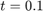
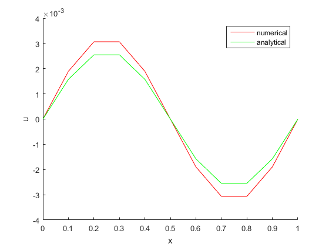
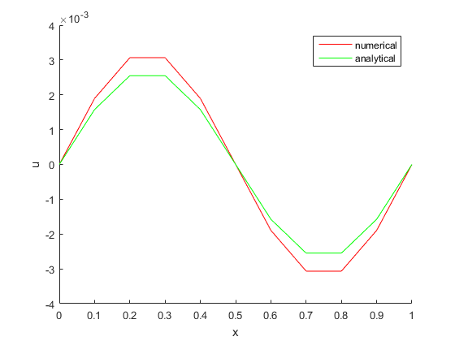

HW 2.6.2
Contents
Initial-boundary-value Problem
where , and
Numerical Solution
Using , , and
f_ = @(x)(sin(2 * pi * x)); a = 0; b = 0; nu = 1 / 6;
In domain , let , , a.k.a , 
dx = 0.1; dt = 0.02; T = round(1 / dt); X = round(1 / dx); x = 1; t = 1; M = x * X; N = t * T;
Let 
r = nu * dt / dx / dx;
Setting domain and boundary value
x_ = 0 : dx : 1; t_ = 0 : dt : t; [X_, T_] = meshgrid(x_, t_); f = f_(x_); u = zeros(size(X_)); u(1, :) = f; va = (-r / 2) * ones(1, M - 2); vb = bsxfun(@plus, ones(1, M - 1), r); for jj = 1 : N - 1 d = (r / 2) * u(jj, 1 : M - 1) + ... (1 - r) * u(jj, 2 : M) + ... (r / 2) * u(jj, 3 : M + 1); d(1) = d(1) + (r / 2) * a; d(end) = d(end) + (r / 2) * b; u(jj + 1, 2 : end - 1) = thomas_algo(va, vb, va, d)'; end figure; mesh(X_, T_, u); xlabel('x'); ylabel('t'); zlabel('u(numerical)');
Analytical Solution
Notice that the analytical solutions following the form like
By using the method of undetermined coefficients, the solution is as follows
u_exact = sin(2 * pi * X_) .* exp( (-4 * pi * pi * nu) * T_); figure; mesh(X_, T_, u_exact); xlabel('x'); ylabel('t'); zlabel('u(exact)');
Error
delta = u_exact - u; err = max(abs(delta(:))); figure; mesh(X_, T_, u_exact - u); xlabel('x'); ylabel('t'); zlabel('\Deltau'); fprintf('max error = %f\n', err);
max error = 0.011067
Value of Slices
function plotSlice( t_slice, dt, u, u_exact, x_ ) t_slice_id = round(t_slice / dt) + 1; u_slice_num = u(t_slice_id, :); u_slice_num = u_slice_num(:); u_slice_ext = u_exact(t_slice_id, :); u_slice_ext = u_slice_ext(:); figure; hold on; plot(x_, u_slice_num, 'r-', x_, u_slice_ext, 'g-'); legend('numerical', 'analytical'); xlabel('x'); ylabel('u'); u_slice_err = max(abs(u_slice_num - u_slice_ext)); fprintf('when t = %.2f, max error = %f\n', t_slice, u_slice_err); end
plotSlice( 0.06, dt, u, u_exact, x_ );

plotSlice( 0.1, dt, u, u_exact, x_ );
plotSlice( 0.9, dt, u, u_exact, x_ );
when t = 0.06, max error = 0.007932 when t = 0.10, max error = 0.010202 when t = 0.90, max error = 0.000517
 
 Slice of
t = 50; dt = 1; N = round(t / dt); t_ = 0 : dt : t; r = nu * dt / dx / dx; [X_, T_] = meshgrid(x_, t_); u_1 = f; u_1(1) = 0; u_1(M + 1) = 0; va = (-r / 2) * ones(1, M - 2); vb = bsxfun(@plus, ones(1, M - 1), r); for jj = 1 : N - 1 d = (r / 2) * u_1(1 : M - 1) + ... (1 - r) * u_1(2 : M) + ... (r / 2) * u_1(3 : M + 1); d(1) = d(1) + (r / 2) * a; d(end) = d(end) + (r / 2) * b; u_1(2 : end - 1) = thomas_algo(va, vb, va, d)'; end u_exact_2 = sin(2 * pi * x_) .* exp( (-4 * pi * pi * nu) * 50); u_slice_err = max(abs(u_1 - u_exact_2)); fprintf('when t = %.2f, max error = %f\n', 50, u_slice_err);
when t = 50.00, max error = 0.000000
Thomas Algorithm
function x = thomas_algo(a, b, c, d) n = length(b); u = b; l = [1, a]; for ii = 2 : n l(ii) = a(ii - 1) / u(ii - 1); u(ii) = b(ii) - l(ii) * c(ii - 1); end y = d; for ii = 2 : n y(ii) = d(ii) - l(ii) * y(ii - 1); end x = y; x(end) = y(end) / u(end); for ii = n - 1: -1 : 1 x(ii) = (y(ii) - c(ii) * x(ii + 1)) / u(ii); end end